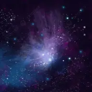
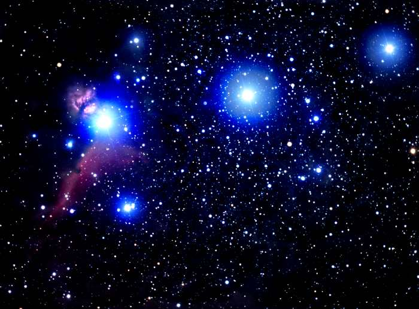
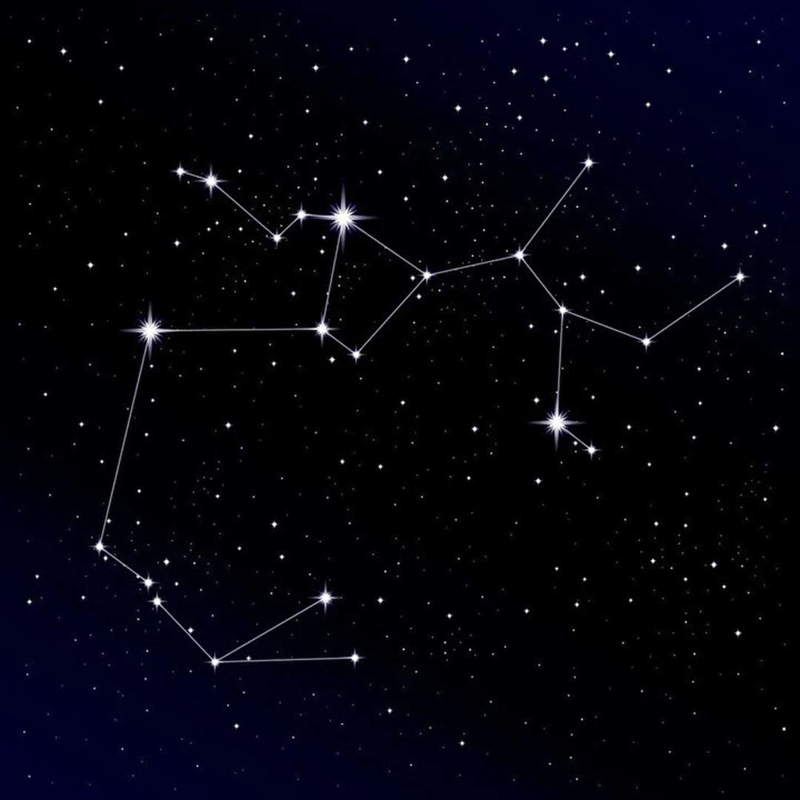
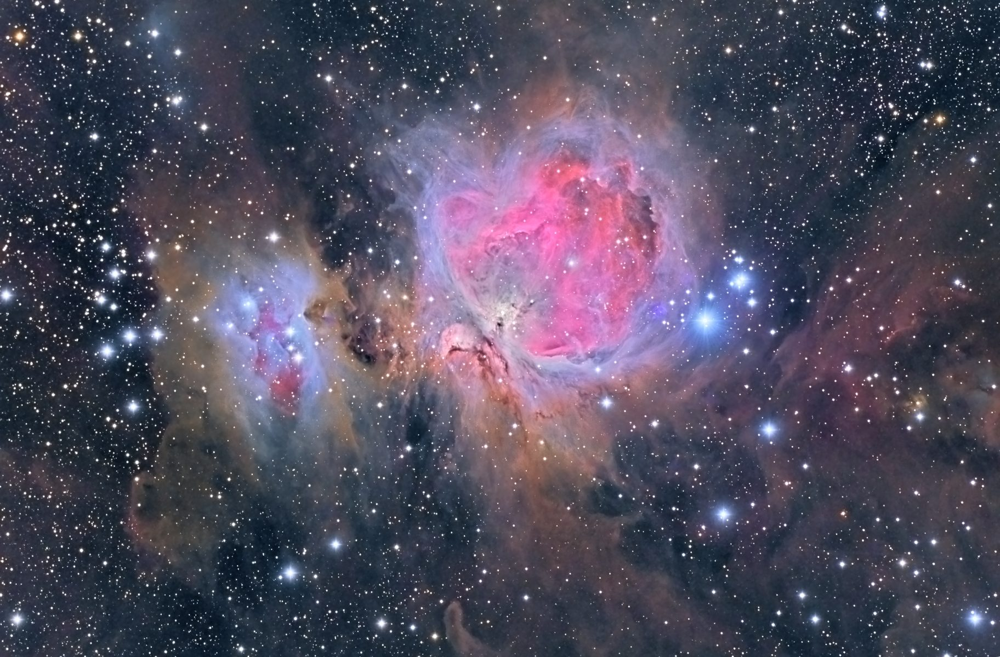
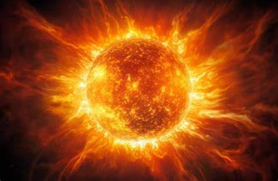
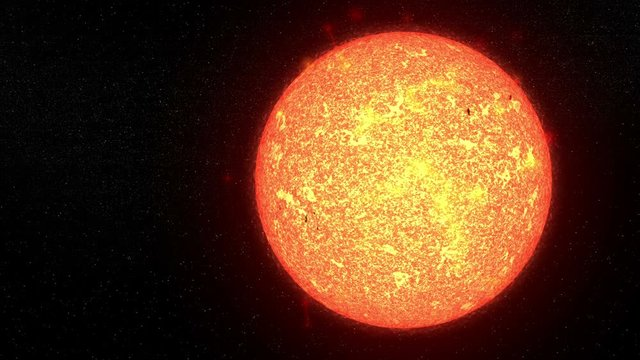
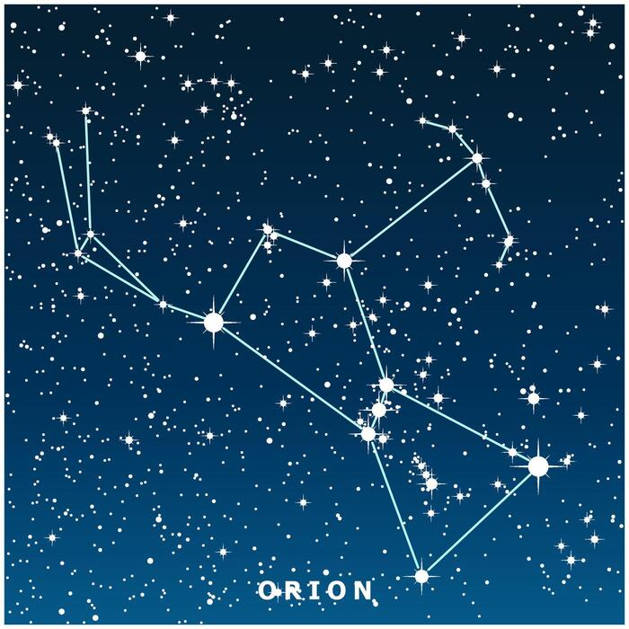

UN VIAJE POR EL ESPACIO
¿Alguna vez te has preguntado qué secretos esconden las constelaciones?
El universo es un lugar lleno de misterios, luces y maravillas que esperan ser descubiertas. Acompáñanos en este viaje para conocer los increíbles secretos que existen más allá de nuestro planeta.

Descubre algunos de los elementos más fascinantes del espacio. Toca cada apartado para conocer más.
Las estrellas son enormes esferas de gas muy caliente que producen su propia luz y energía. Están formadas principalmente por hidrógeno y helio. El Sol es la estrella más cercana a nuestro planeta y es fundamental para la vida.

Las constelaciones son agrupaciones aparentes de estrellas que, vistas desde la Tierra, parecen formar figuras. Desde la antigüedad, las personas las han utilizado para orientarse, crear historias y reconocer el cielo nocturno.

Las estrellas nacen dentro de enormes nubes de gas y polvo llamadas nebulosas. La gravedad reúne este material y, cuando el centro alcanza las condiciones necesarias, comienza la fusión nuclear y nace una nueva estrella.

El espacio guarda curiosidades que hacen aún más interesante observar el cielo.

El Sol es una estrella que se encuentra en el centro de nuestro sistema solar. Su luz y calor permiten que exista vida en la Tierra. Tiene aproximadamente 4,600 millones de años.

Las estrellas pueden vivir millones o miles de millones de años. Su duración depende de su masa. Algunas terminan convirtiéndose en enanas blancas y otras pueden explotar como supernovas.

Orión es una de las constelaciones más conocidas. Se reconoce fácilmente por sus tres estrellas alineadas, conocidas como el cinturón de Orión.
Cuando observamos estrellas muy lejanas, su luz ha viajado durante muchos años antes de llegar a nuestros ojos. ¡Por eso mirar el cielo también es mirar al pasado!
Conoce algunas estrellas y constelaciones famosas.
| Nombre | Tiempo de vida | Características |
|---|---|---|
| El Sol | Aproximadamente 10 mil millones de años | Es la estrella de nuestro sistema solar. |
| Sirio | Depende de su evolución estelar | Es la estrella más brillante del cielo nocturno terrestre. |
| Orión | No aplica | Es una constelación reconocida por sus tres estrellas alineadas. |
| Osa Mayor | No aplica | Es una constelación que contiene el famoso asterismo del Carro. |
Déjanos tu pregunta, opinión o comentario sobre el universo.
Hernandez Martinez Andrea Sarahí
Programadora: Andrea Sarahí
Grupo: 5A Programación
Correo: andy.shm@gmail.com
Teléfono: 123456789
Proyecto: Más allá del cielo